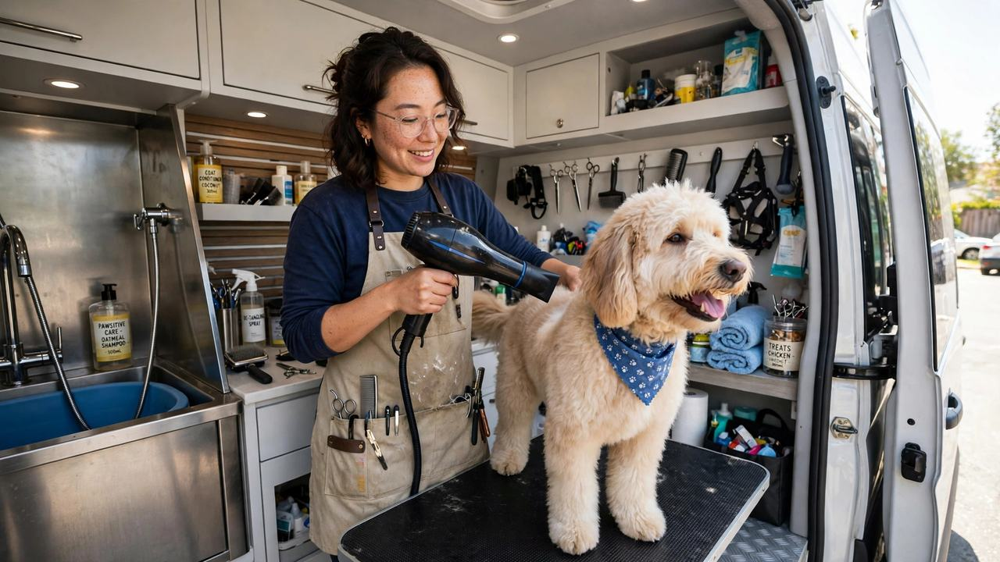

The groomer comes to your driveway.
Pooch Pronto lists mobile dog groomers across Florida — fully equipped grooming vans that park at your home and groom your dog one-on-one: no cages, no waiting room, no car ride, no other dogs. Every listing is verified against the business's own published website or page: its phone, its services, the dog sizes it takes, and the areas it serves. Call the business direct — no middleman, no commission.
SWFL · Orlando · Tampa Bay · South Florida · Jacksonville — 31 verified businesses.
Your location stays on your phone — we use it only to find your nearest city, and we never store or send it anywhere.

Loading…
How it works
Search by city or service above, or open a city page below. Every listing shows the business's own phone number.
The services a groomer publishes, the dog sizes they take and the areas they serve are on the card — exactly as the business publishes them.
Tap the phone number to call the business. You talk to them, not to us — no middleman, no booking fee.
The requests people make most: a full groom for a doodle whose coat won't wait, a de-shedding session in coat-blowing season, a first puppy groom, and a gentle groomer patient enough for a senior dog who can't do the salon anymore.
Checked against the business's own pages
Grooming is not a licensed trade in Florida, so there is no license to check — which makes verification more important, not less. Before any listing appears here, we check the business's own published website or page: the phone number, the services it offers, the dog sizes it takes and the areas it serves must all match what the business itself publishes. Some groomers publish only a Facebook or Instagram page rather than a website — we verify against whatever the business itself publishes, and link it on the card.
We don't show star ratings, and a listing is never an endorsement. If a detail is wrong, tell us and we'll fix it — and any business can ask to be removed, free, at any time.
Browse by region
31 verified businesses across Florida. New cities are added as they are verified — a city page only appears once at least three verified businesses serve it.
Featured listings — $49 a month
A Featured listing is a paid upgrade: it puts a business's card at the top of its city's page, clearly labelled "Featured — Paid Placement". It costs $49 a month, and we only offer it once a business can see the tracked intent taps its free listing is getting — one full groom pays it back. Every listing on this site right now is a free basic listing. Nobody is featured yet, and nobody has been charged anything.
Do you groom dogs in Florida? Join the directory free — we check your published business details before your listing goes live.
About these listings
Every listing here was checked against the business's own published website or page. If a service, a size limit or a detail wasn't published, we left it blank rather than guessing. We don't show star ratings. If a detail is wrong, the business can ask us to fix it — and any business can ask to be removed.